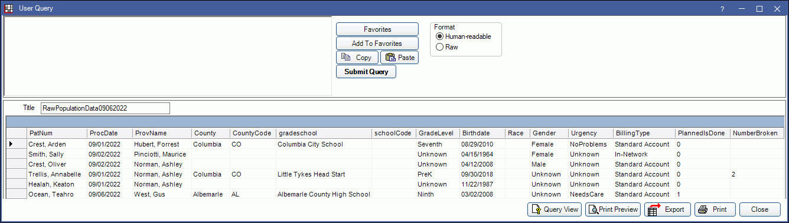

Raw Population Data Report
For offices utilizing Public Health features, the Raw Population Data report produces a list of patients who had treatment during a specific date range.
In Standard Reports, in the Public Health area, click Raw Population Data.

This report is for offices utilizing Public Health. It produces a list of patients who had treatment during a specific date range. The resulting data is presented as a single table, with each patient shown on one row.
Filters
Set the report filters before running the report.
Calendar: Select the date range to include in the report. Select the start date in the left calendar and the end date on the right calendar. Filters by patients with completed procedures in the date range.
Adjustments types for broken appointments: Select the Broken Appointment adjustment type used by the practice. Ctrl + click to select multiple select multiple types. At least one must be selected. This will be used to calculated NumberBroken on the report and will also include patients who had a broken appointment, even if there were no completed procedures in the date range.
Report Query
After setting the report criteria, click OK to see generate the results in the User Query window.
Below is an example of the report and explanation of the report columns.
- PatNum: Displays patient name when format is set to Human-Readable. Set format to Raw to see unique Patient Number instead.
- ProcDate: If no broken appointments are counted, this is the date of the first completed procedure in the report date range. If broken appointments are counted, this is the date of the patient's very first completed procedure, if any, or the first broken appointment adjustment.
- ProvName: The name of the provider on the most recent procedure or broken appointment adjustment.
- County: Patient's county. Set in Edit Patient Information: Public Health Tab.
- CountyCode: County code. Determined by patient's county. Set in Counties.
- gradeschool: Site (or Grade School) set in Edit Patient Information: Public Health Tab.
- schoolCode: Note in the Site List of the attached Site (or Grade School).
- GradeLevel: Patient's Grade Level set in Edit Patient Information: Public Health Tab.
- Birthdate: Patient's birthdate set in Edit Patient Information.
- Race: Patient's race set in Edit Patient Information: Public Health Tab.
- Gender: Gender set in Edit Patient Information. May differ from Gender Identity set in Edit Patient Information: Public Health Tab.
- Urgency: Treatment Urgency set in Edit Patient Information: Public Health Tab.
- BillingType: Patient Billing Type set in Edit Patient Information.
- PlannedIsDone: 1 indicates Done has been checked in the Planned Appointments tab for this patient to mark all planned appointments as complete.
- NumberBroken: Number of broken appointments. This is based on the number of broken appointment adjustment types in the date range.
The data is intended to be saved to a text file and sent to a centralized office where it gets loaded into one larger table containing data from many locations. For instance, all data for an entire state could be sent to a central office once per month. The data format makes it easy to automate grouping and reporting.